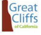

California cliffs are one of a kind in the United States where no cliffs are as magnificent and beautiful as them. And California is the only state that have cliffs that fronts all possible environments: sea, river, mountains and canyons. There are four such individual unique cliffs: West Cliff, North Cliff, East Cliff and South Cliff. All offer fantastic overlooking views, recreational areas, camping sites, wildlife watch spots and overnight cabins.
Located within a 100 mile radius from Irvine, California, they can be reached by roads easily. The closest cliff to Irvine is West Cliff, which is the most popular and most visited.